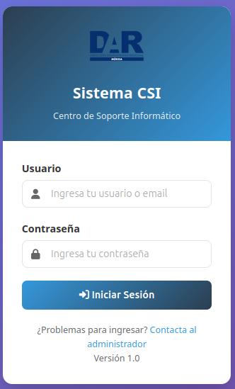
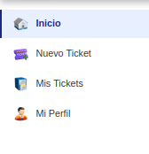
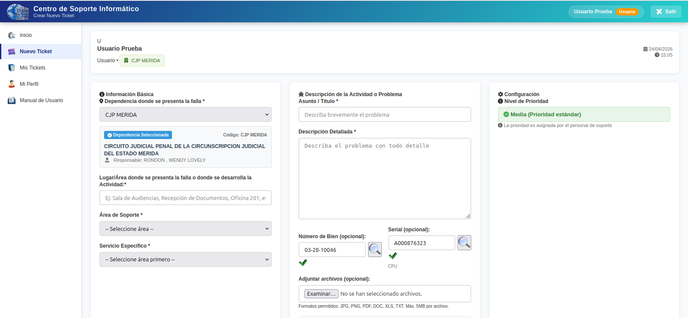
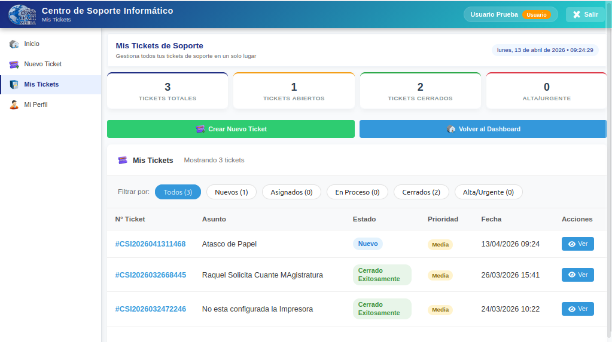
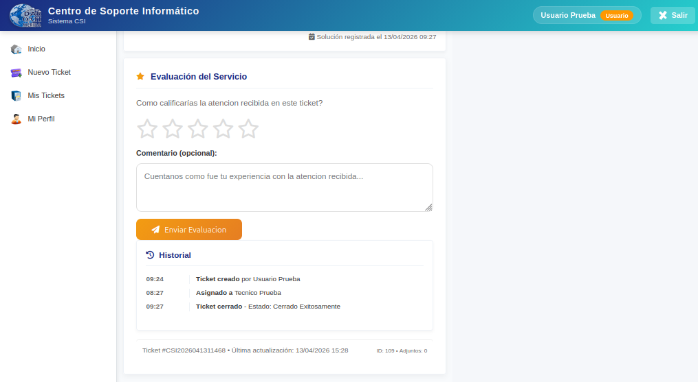
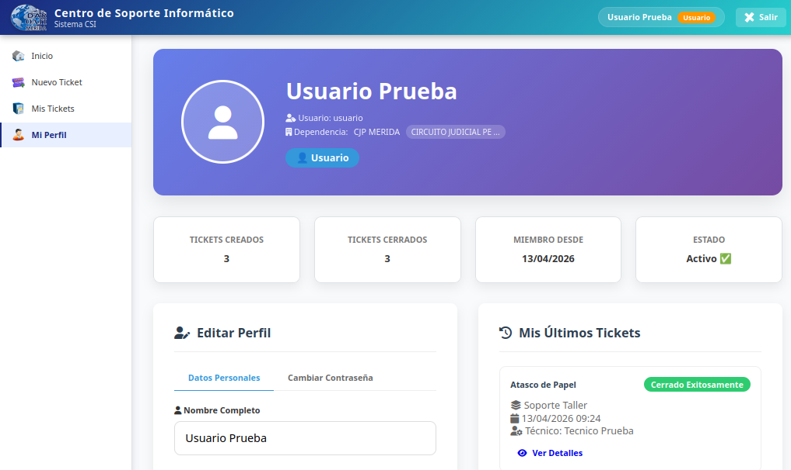

Manual de Usuario
Centro de Soporte
Guía para Usuarios del Areas Operativas: Infraestructura - OATI
Versión 2.0
Mayo 2026
1. Inicio de Sesión
Para acceder al sistema, abra su navegador web y diríjase a la dirección del sistema CSI.
- Ingrese su Usuario y Contraseña
- Haga clic en "Iniciar Sesión"

PANTALLA 1: Login
Importante: Sus credenciales son personales. No las comparta con terceros.
Al iniciar sesión, verá las siguientes opciones:
| Opción | Descripción |
|---|
| Inicio | Inicio con estadísticas |
| Nuevo Ticket | Crear un nuevo ticket |
| Mis Tickets | Ver tickets creados |
| Mi Perfil | Editar datos personales |

PANTALLA 2: Menú Lateral
3. Crear un Ticket
3.1 Pasos para crear un ticket
- Haga clic en "Nuevo Ticket"
- Complete todos los campos obligatorios
- Haga clic en "Crear Ticket"
3.2 Campos del formulario
| Campo | Descripción |
|---|
| Dependencia | Lugar físico donde está el problema |
| Lugar / Área | Especificar el lugar exacto (oficina, pasillo, etc.) |
| Tipo de Atención | Seleccione OATI (Informática) o Infraestructura (Mantenimiento) |
| Área de Soporte | Se actualiza según el tipo de atención seleccionado |
| Servicio Específico | Se actualiza según el área de soporte seleccionada |
| Asunto | Título breve del problema |
| Descripción | Detalle completo del problema o actividad |
| Número de Bien (opcional) | Código del bien registrado en la institución |
| Serial (opcional) | Serial del equipo |
| Prioridad | Asignada por el personal de soporte |
3.3 Tipo de Atención
Al crear un ticket, debe seleccionar el tipo de atención:
- OATI (Informática): Problemas con equipos de computación, impresoras, sistemas, redes, software
- Infraestructura: Problemas de mantenimiento, electricidad, plomería, mobiliario, estructura física
Al seleccionar el tipo de atención:
- Las listas de Área de Soporte y Servicio Específico se actualizan automáticamente
- Solo mostrarán las opciones correspondientes al tipo de atención elegido
Nota: Si selecciona "OATI" verá servicios de soporte técnico informático. Si selecciona "Infraestructura" verá servicios de mantenimiento general.

PANTALLA 3: Formulario de Nuevo Ticket
Nota: La "Dependencia" indica el lugar FÍSICO del problema, no su área de trabajo.
3.4 Número de Bien y Serial (Opcional)
Si el problema está relacionado con un equipo o bien registrado en la institución, puede ingresarlo para facilitar el soporte técnico.
- Ingrese el Número de Bien (formato: 03-28-7258) o
- Ingrese el Serial del equipo
- Haga clic en el botón de lupa para buscar en la base de datos de Bienes
Si se encuentra el bien:
- Se completará automáticamente el otro campo
- Se mostrará la descripción del bien debajo
- Aparecerá un check de confirmación
Nota: Este campo es opcional. Si no conoce el número de bien o serial, puede dejar los campos vacíos.
3.5 Adjuntar archivos
Si desea adjuntar evidencias (fotos, documentos):
- Haga clic en "Adjuntar archivos"
- Seleccione los archivos de su computadora
- Formatos: JPG, PNG, PDF, DOC, XLS, TXT
- Tamaño máximo: 5MB por archivo
4. Seguimiento de Tickets
4.1 Ver mis tickets
- Haga clic en "Mis Tickets"
- Verá todos los tickets que ha creado
- Cada ticket muestra: número, asunto, estado, fecha

PANTALLA 4: Mis Tickets
4.2 Ver detalle
- Haga clic en el ticket que desea ver
- Podrá ver: estado, técnico asignado, solución aplicada, archivos
4.3 Estados de un ticket
| Estado | Descripción |
|---|
| Nuevo | Ticket creado, sin asignar |
| Asignado | Técnico asignado |
| En Proceso | Técnico trabajando |
| Cerrado Exitosamente | Problema resuelto |
| Cerrado No Exitoso | No se pudo resolver |
5. Evaluar Tickets Cerrados
Cuando un ticket se cierra exitosamente, puede evaluar la atención recibida.
5.1 ¿Cómo evaluar?
- Al cerrar un ticket, el sistema mostrará el formulario de evaluación
- O desde "Mis Tickets", haga clic en un ticket cerrado
- Califique con estrellas (1 a 5):
⭐⭐⭐⭐⭐
5 = Excelente | 4 = Bueno | 3 = Regular | 2 = Malo | 1 = Muy malo
- Escriba un comentario (opcional)
- Haga clic en "Enviar Evaluación"

PANTALLA 5: Formulario de Evaluación
Nota: La evaluación solo aplica para tickets "Cerrado Exitosamente".
6. Mi Perfil
- Haga clic en "Mi Perfil"
- Actualice: nombre, correo electrónico
- Cambiar contraseña: ingrese contraseña actual y nueva
- Guarde los cambios

PANTALLA 6: Mi Perfil
 Nuevo Ticket
Nuevo Ticket